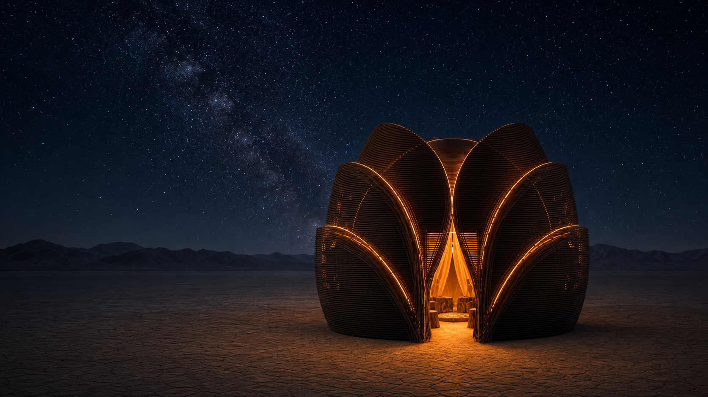
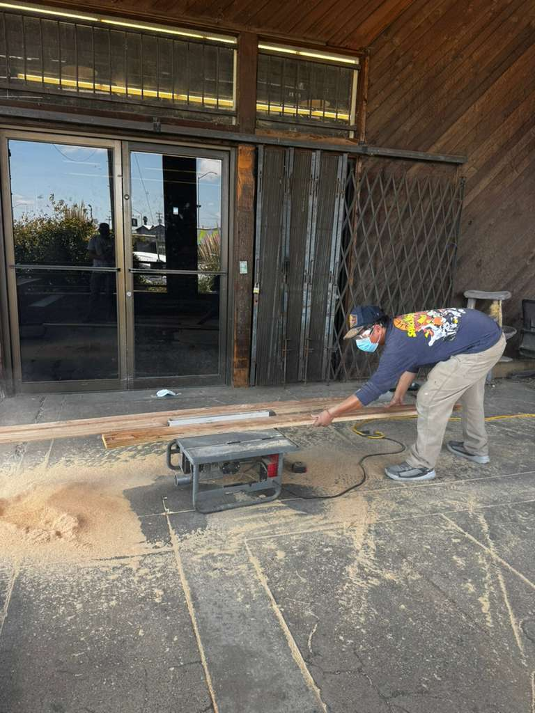
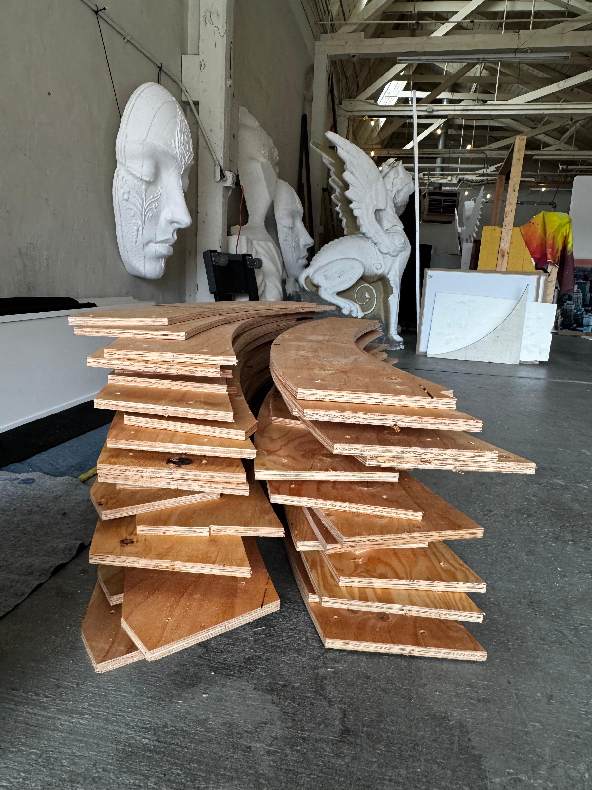
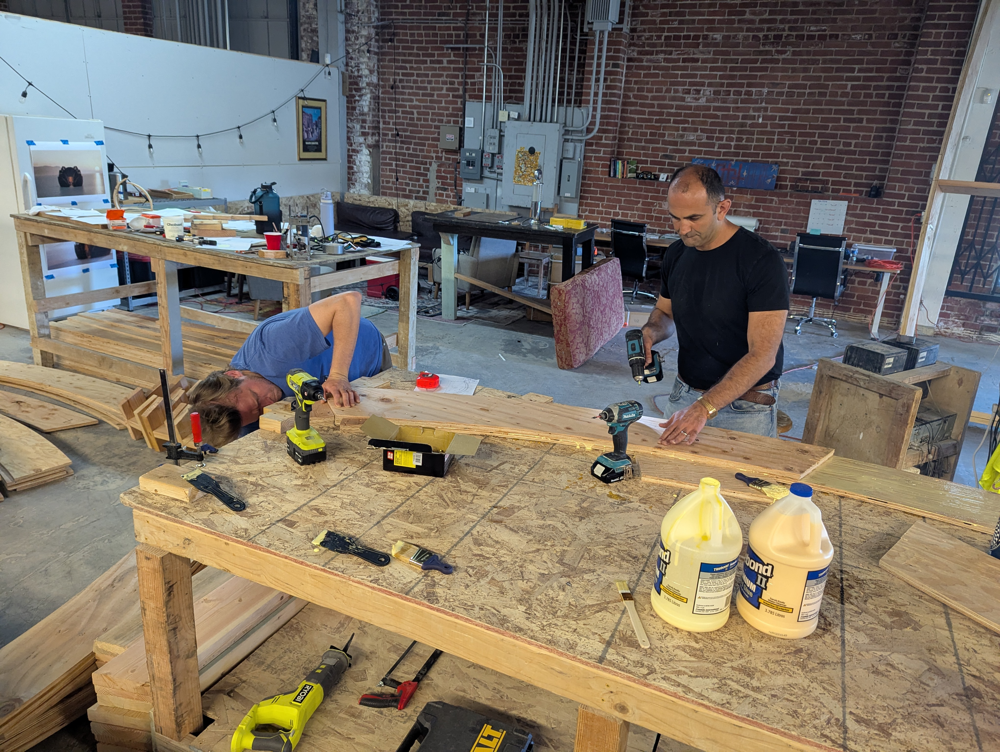

A sanctuary for presence, reflection, and release.
A charred wooden lotus built to hold the moments we carry. Recipient of a Burning Man Honorarium Grant 2026, the Sanctuary of the Silent Star is a community-built installation for grief, remembrance, tenderness, and transformation.
Explore the sanctuary


This is a community-built project, shaped by artists, builders, friends, donors, and volunteers. Join us as we bring the sanctuary from idea into form.
Thank You
